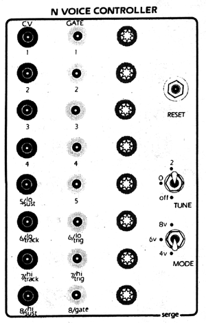

~ 216 MDAC ~
N Voice Controller
The SERGE N Voice Controller (NVC) is a micro-processor based digital-to-analog converter. This module converts the inexpensive CASIO keyboard to a monophonic/polyphonic keyboard with voltages, gates, and triggers for controlling the analog synthesizer. This interface will work with the Casio keyboard models MT-10, MT-30, MT-31, MT-40, CT-201, and CT-202.
In this version, there are three voltage outputs plus five gates and three triggers. There are three switches, one push-button for resetting the interface on initial power-up, or after altering the keyboard's main clock frequency (through modifications such as a hardware octave drop or hardware control of the keyboard's high frequency clock). A second switch switches to true six or eight voice polyphony, mainly intended to control multiple homogeneous voices in the modular synthesizer. The third switch sets all control voltage outputs at either 2 or 4 volts, and sets gates high for tuning the oscillator voices.
The different control voltage outputs are as follows:
1. High Key with Sustain. This voltage will correspond to the last high key depressed on the keyboard, If other low keys are sustained, then when the high key is released, the voltage will not shift down to the lower held keys, but will sustain at the last high note played. Any new key played which is higher than the highest current key depressed will be reflected at the output. Any new key played which is lower than the current held key will be ignored. Whenever a new high key is played, or when the same high ley is repeated awhile other lower keys held) a High Trigger will be produced.
2. Current High Key. This voltage will correspond to the current actual highest key depressed.
3. Latest Hey. This might be the most useful output for a monophonic synthesizer voice. It is updated each time a new key is played. If a three-note chord is held. and the middle note is lifted then depressed, the middle note will be the "latest key". The triggers from this voice will always trigger with a new high key, a new low key, or any new intermediate key.
4. Low Key with Sustain. Like the High Key with Sustain, this output will hold the previous low note if other higher keys are sustained. Any new low key will cause the Low Trigger to activate.
5. Gate. Whenever any key is depressed the Gate goes high for use with envelope generators (ADSR's or Slopes).
6. High Trigger. For use with ADSR's to retrigger on new high keys .
7. Low Trigger. For use with ADSR's to retrigger on new low keys.
8. Latest Trigger. For use with) ADSR's to retrigger on most recently played key.
The above configuration is designed mainly to be used with a one or two voice synthesizer. Since the Casio keyboard has internal eight note polyphony, its own forty-nine different waveforms can be further processed and and extended using the voices of the synthesizer and the various voltage-controlled signal processors in the synthesizer. Thus the keyboard can be used as both a polyphonic device and a monophonic "lead" synthesizer simultaneously. The combination of a Serge Voice with a processed Casio sound is an extremely versatile voice, "fatter" than the fattest synthesizer sounds from a monophonic instrument. With blending and contrasting of synthesizer voice and processed Casio voice, wide ranging timbres are available using a minimum of synthesizer modules.
For more standard polyphonic applications, four-voice polyphony is available simultaneously with the above monophonic outputs. A front panel switch will change the interface logic to standard 6 and 8-voice polyphony. Six or eight keyboard control voltages and six or eight corresponding gate signals can be used to control multiple synthesizer voices for six and eight-note polyphony.
Although Serge Modular does not do custom modifications to Casio keyboards as a service, a number of mods are installed with keyboards delivered with the N Voice Controller:
1. Octave Drop. A switch allows the keyboard to be extended a full octave lower for all voices. This switch will also lower the N Voice control voltage outputs by one volt.
2. Hold. A switch to engage a different type of sustain than that available with the Sustain Pedal or Sustain Switch on the unmodified Casio. It provides a "non-overlapping" sustain. If one note (or chord) of the organ voice is played, it will be sustained until another note (or chord) is played.
3. Silent Voice Select. This is the same as the SET switch on the Casio except that the note will not sound when setting new VOICES.
4. In addition to these mods which will work without the N Voice Controller, a multi-pin connector is added to interface the NVC to the internal circuitry of the Casio. Other modifications are available through local personnel. Although Serge Modular does not do this type of service, we would be glad to refer you to those who do custom work on Casio keyboards (or if the above modifications are desired without the NVC unit).

updated Jan 20 2005